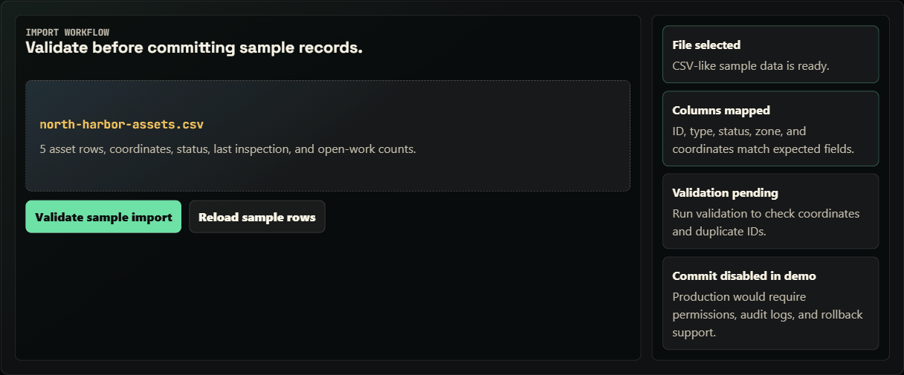
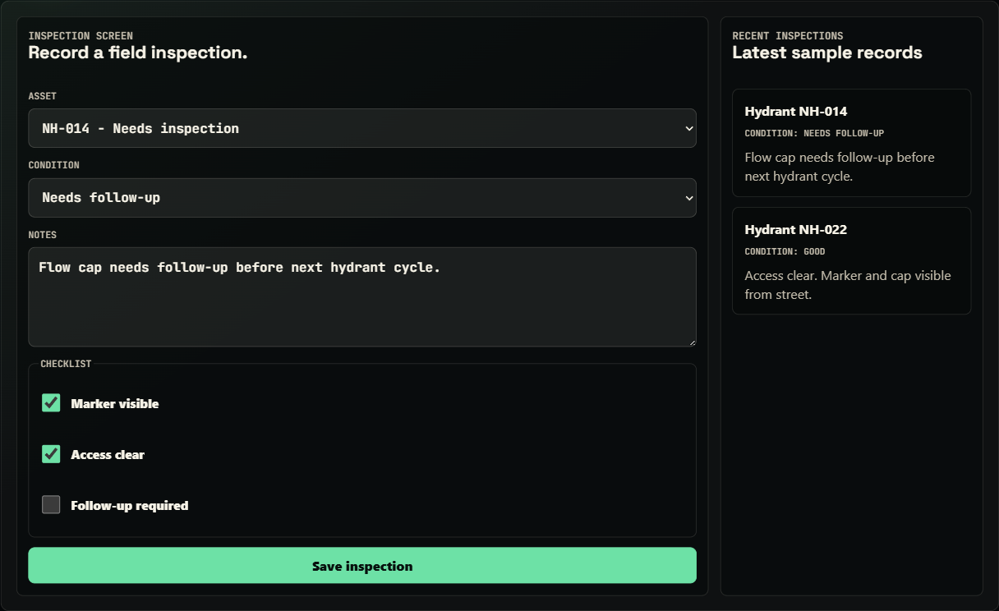
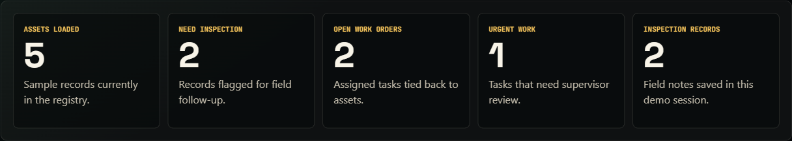

What this proves
Map-first operational UI, workflow modeling, and production-risk awareness.
Flagship case study
Public MapLibre sample app for locating field assets, recording inspections, opening work orders, importing updates, and reporting status from one map-first workflow.

Quick summary
Frontend, internal-tools, map UI, and field-workflow proof.
Map-first operational UI, workflow modeling, and production-risk awareness.
Asset map, selected-record state, inspections, work orders, imports, reports, roles, and sample data.
Open the app, then scan summary, field loop, data model, and hardening.
Sample data only; no real auth, database, municipal data, live GIS, offline sync, audit logs, server validation, or public tests.
Try this demo
Sample records only; this shows workflow and UI state.
Visual proof
Location comes first; asset state, inspections, work orders, imports, and reports follow the selected record.
Project links
The public app uses sample data. No public source repo is linked, so this page points to app and portfolio context.
TL;DR
01 / Summary
TraverseOps connects map location, asset state, inspections, work orders, imports, reports, and roles with public-safe sample records.
Location, history, work state, imports, reports, and roles need one selected record.
The public app uses sample data and omits auth, offline sync, audit trails, and production GIS.
I modeled a MapLibre workspace with relational sample data, filters, panels, and direct inspection/work-order paths.
The public version favors easy review over permissions, audit logging, and offline conflict resolution.
Production would add RBAC, offline sync, import validation, audit logs, device testing, and reliable map sources.
Why this matters
Crews and supervisors need maps, records, inspections, and work orders in one path.
Location is the entry point; the selected asset owns history, status, imports, reports, and follow-up work.
The project shows multi-entity data thinking, mobile UI judgment, and production planning.
Production readiness
Assets, inspections, work orders, imports, reports, and roles tie to the selected map record.
Sample data only; no accounts, permissions, audit trails, offline sync, or GIS feeds.
Production needs auth, roles, import validation, audit logs, offline conflicts, device tests, map monitoring, and clearer errors.
Operational data needs tenant isolation, least privilege, PII review, backups, logs, and alerts.
02 / What I built
Uses MapLibre and Supabase-style concepts with sample records, not real municipal data or a production backend.
03 / Problem
Asset work breaks when maps, records, inspections, and work orders live apart. Crews get duplicate typing, delays, and weak handoff.
TraverseOps makes the map the entry point and the selected asset the hub for condition, inspections, work orders, and reports.
04 / Target users
Need fast lookup, mobile detail views, checklist entry, and obvious next actions.
Need condition trends, prioritized work orders, and clear assets needing attention.
Need imports, reports, roles, and traceable changes.
05 / Field loop
06 / Tech stack
Map interaction, panels, and relational records stay separate so sample data can grow toward authenticated field operations.
07 / Map/interface architecture
Public data stays inside a sample boundary. Users select an asset, create inspections and work orders, and view reports from the same records.
08 / Data model
| Entity | Typical fields | Why it matters |
|---|---|---|
| Assets | ID, type, coordinates, area, status, condition, last inspected date. | Anchor for map display, history, inspection, work, and reporting. |
| Inspections | Asset ID, inspector, timestamp, checklist values, condition, notes, follow-up flag. | Captures field observations and history. |
| Work orders | Asset ID, issue summary, priority, status, assignee, due date, source inspection. | Turns findings into trackable work. |
| Imports | File name, column mapping, validation result, imported count, rejected rows. | Shows bulk data entry without silent corruption. |
| Reports | Date range, area, status, overdue count, completed work, exception groups. | Converts records into supervisor status and planning views. |
| Team roles | User, role, permission scope, assigned area, active status. | Models field entry, supervision, and admin control. |
const traverseState = {
assets: [...traverseAssets],
inspections: [...baseInspections],
workOrders: [...baseWorkOrders],
selectedAssetId: "NH-014",
filter: "all"
};
function visibleAssets() {
if (traverseState.filter === "all") return traverseState.assets;
return traverseState.assets.filter((asset) => asset.status === traverseState.filter);
}Sample-data excerpt; no private municipal records.
09 / Imports
TraverseOps frames imports as steps: choose a file, map columns, validate coordinates and IDs, preview rejected rows, then commit valid records.
10 / Inspection and work-order flow
A crew selects an asset, records condition and checklist notes, and flags follow-up. Follow-up becomes a work order tied to the same asset.
Captures condition, checks, notes, and field context.
Converts findings into priority, status, assignment, due date, and source record.
Keeps open work and inspection freshness visible by asset, area, or urgency.
11 / Public limits
12 / Production plan
The public app shows product shape and data model. Production needs identity, authorization, data quality, offline behavior, security, and recovery guarantees.
Public: crew, supervisor, and admin-style flows.
Production: accounts, server roles, row permissions, least privilege, session expiry, and action boundaries.
Public: mobile-friendly field path.
Production: drafts, retry queues, conflicts, sync status, recovery, and unsynced warnings.
Public: curated sample lifecycle.
Production: validate fields, coordinates, status transitions, priorities, due dates, duplicates, and state changes.
Public: records that could be auditable.
Production: record who changed assets, inspections, imports, assignments, statuses, and reports.
Public: intended path and product structure.
Production: handle failed saves, map failures, denied permissions, stale records, conflicts, rejected imports, and retries.
Public: imports as a review concept.
Production: file limits, mapping, previews, duplicate checks, coordinate checks, rollback, rejected-row exports, logs, and bulk permissions.
Public: desktop/mobile layouts.
Production: phones/tablets, GPS, battery, photos, sunlight readability, and intermittent networks.
Public: sample data.
Production: TLS, secrets, rate limits, upload controls, patching, backups, and privacy-aware logs.
Public: location and status drive the UI.
Production: tile SLAs, cache strategy, fallbacks, geocoding limits, coordinate systems, ownership, and stale-data alerts.
13 / Testing and QA notes
No public automated suite yet. Current evidence is manual browser testing, responsive checks, and documented gaps.
Verify reset, roles, tabs, map selection, filters, forms, imports, and reports.
Check maps, forms, tabs, and buttons at phone, tablet, and desktop widths.
Exercise empty data, resets, invalid imports, missing assets, sparse filters, role changes, and long labels.
No automated E2E, GIS validation, offline-conflict simulation, permission tests, or field-device lab testing yet.
14 / Deployment and run notes
Hosted on GitHub Pages. traverseops-demo.html and traverseops-demo.js run client-side with sample data.
No env vars. Roles, filters, imports, reports, and forms use in-browser sample state.
Explains MapLibre and Supabase-style concepts, but connects to no municipal records, private GIS, or Supabase.
Run python -m http.server 8000, then open /traverseops-demo.html or /traverseops-case-study.html. No build step.
No secrets belong in the public page. Production would keep keys, GIS credentials, accounts, and records out of client code.
15 / Results
TraverseOps gives visitors a concrete surface to evaluate: map-first field flow, multi-entity records, roles, and production gaps.
16 / Screenshots and states




17 / Next improvements
{kind=link}
{kind=link}
{kind=link}